The map is not the territory — and we can measure the gap.
OpenStreetMap is superb where many people map and stale where few do. This project builds an end-to-end pipeline that detects that spatial bias with airborne LiDAR and NAIP imagery, quantifies it from city blocks to all 102 Illinois counties, and corrects it — machine-proposing fixes that the mapping community itself later confirmed.
Volunteered maps have a geography of neglect
In 2019, OpenStreetMap held only 58.3% of the buildings on a university campus tile — and 29.1% in a Colorado Springs residential neighborhood. The omissions are not random: completeness collapses below 0.3 on residential strips while institutional cores sit near 1.0. Whole subdivisions were missing. Downstream users — disaster response, urban analytics, accessibility research — inherit this bias invisibly. Airborne LiDAR sees every roof regardless of who lives under it, which makes it an objective referee.
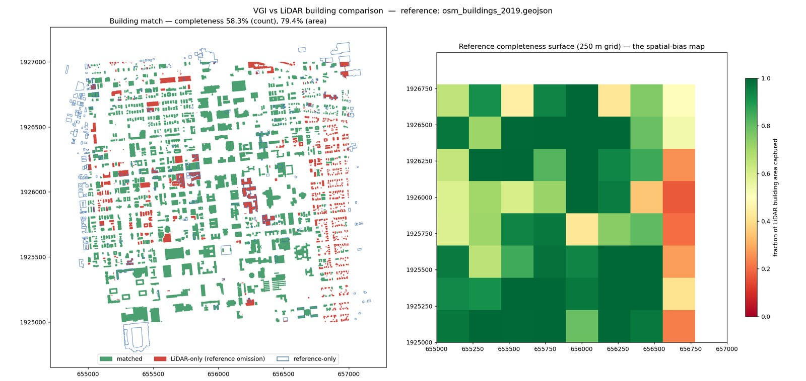
Seven stages, one reproducible notebook
Every stage is a documented script; one notebook runs them all, downloads its own data, and executes unmodified on the I-GUIDE JupyterHub.
Seven results that survive two regions
Omissions are real and spatially structured
OSM 2019 held 58.3% of campus buildings by count (79.4% by area): big institutional buildings get mapped, small residential structures don't.
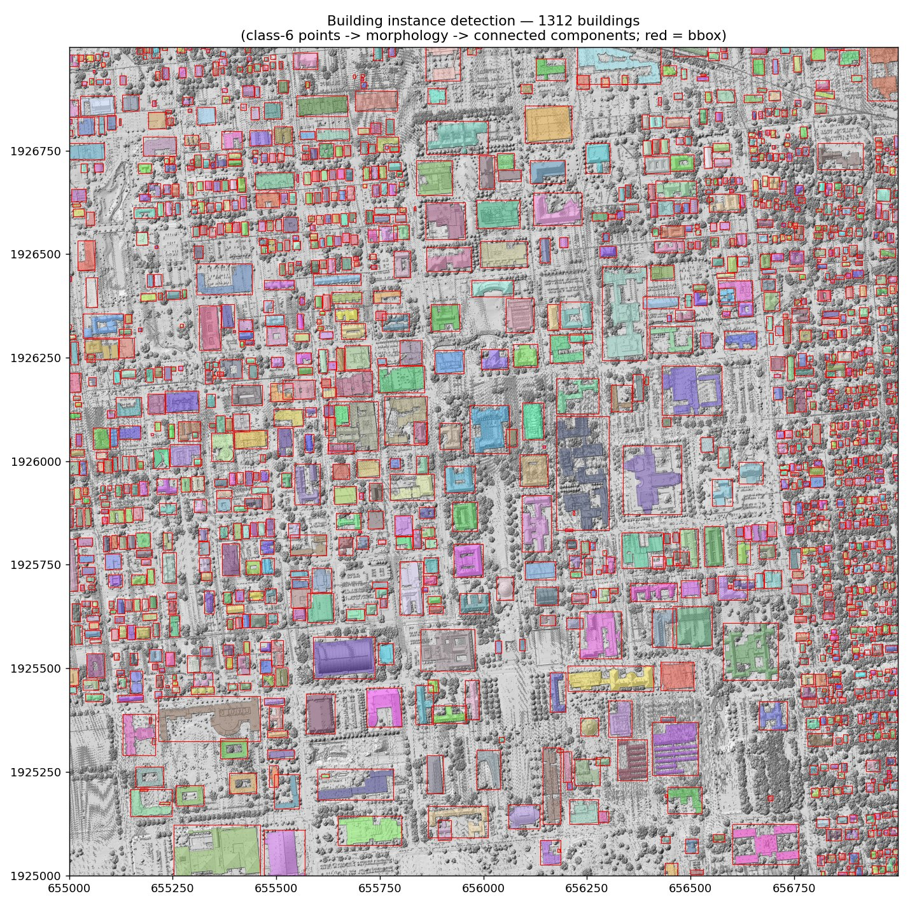
Remote sensing sees gaps years early
By 2026 the community had independently filled 64% of our campus detections and 74.8% in Colorado Springs — they were real buildings all along.
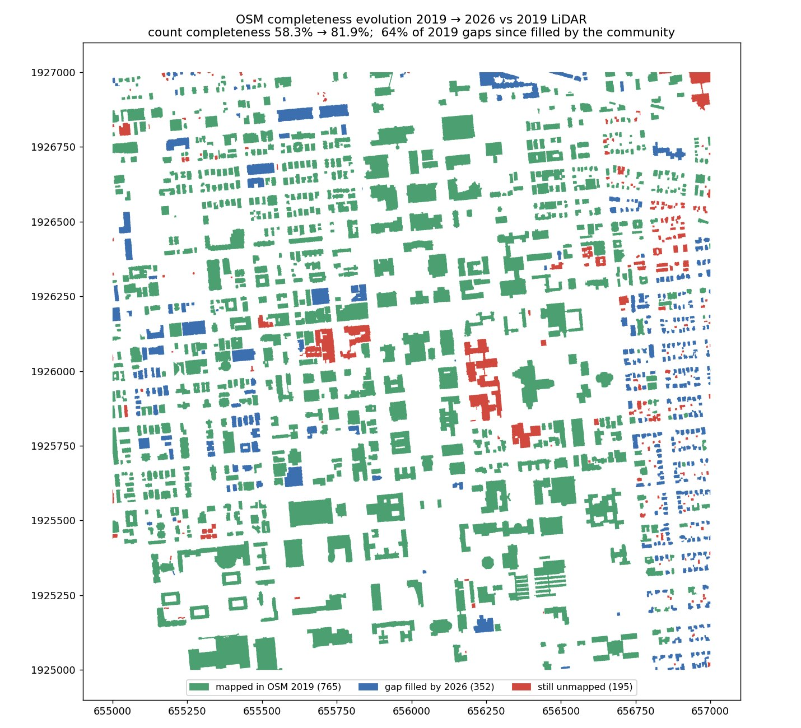
Roads are fine; buildings and attributes are not
Nearly all road length has pavement evidence in both regions — the TIGER import solved geometry. Only 3.3% of statewide segments carry a speed limit.
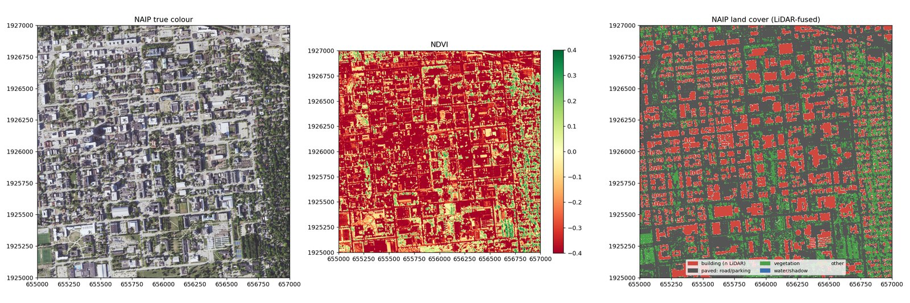
Quality follows contributors, not need
Edit recency correlates strongly with population density. Several rural counties were last touched in 2008; urban counties in 2016.
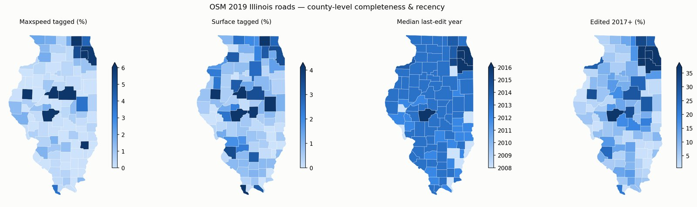
Machine correction works — hybrid wins
Rule-regularized LiDAR footprints + a learned acceptance scorer: 84% of the top-50 campus proposals were later confirmed by the community.
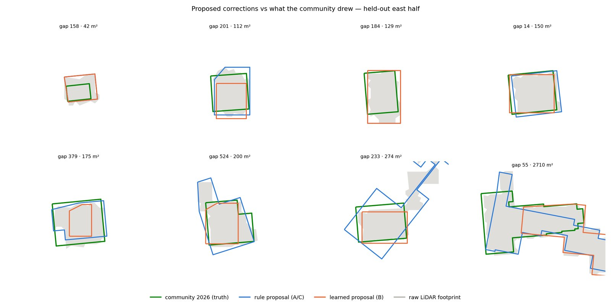
The method generalizes to harder data
Colorado Springs: ground-only LiDAR at a quarter of the point density, semi-arid landscape — the detection variant transfers with zero retuning.
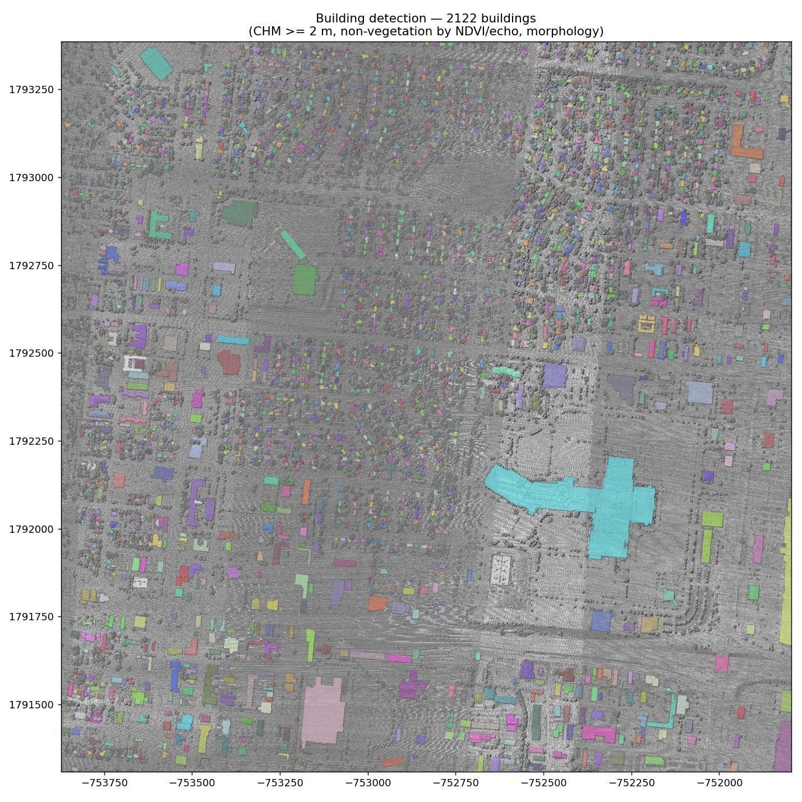
Correction winners flip with label volume
With 83 training labels, rules beat the U-Net; with 821, the U-Net wins geometry (IoU 0.769) and the learned scorer hits a perfect top-50.
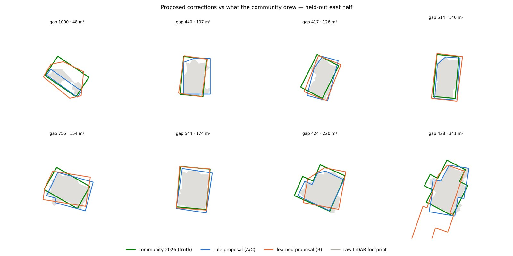
A deployment map, not just a diagnosis
Staleness × population exposure ranks where correction pays off first: Cook, Lake and Winnebago counties top the Illinois list.
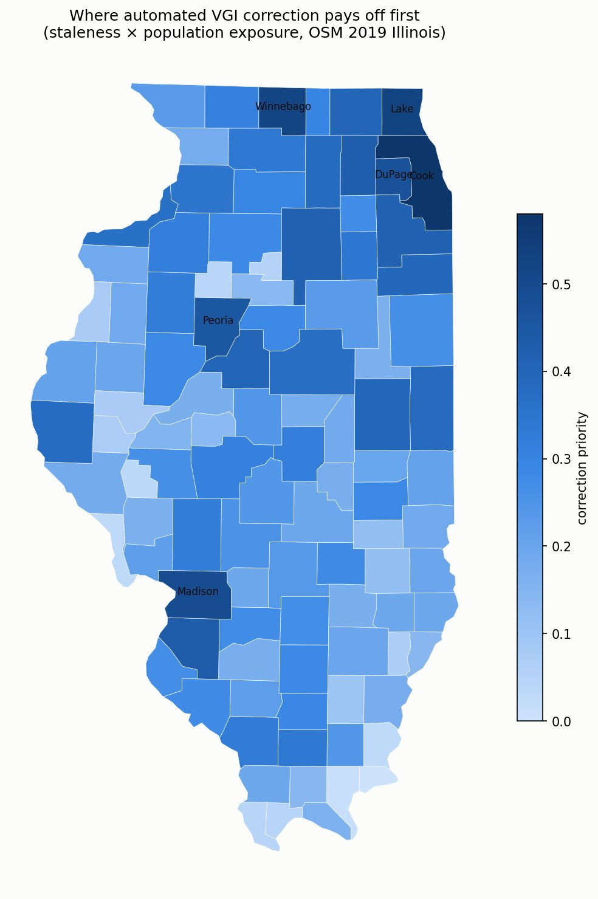
A campus and a suburb, seven years of community mapping
Green: mapped in OSM 2019. Blue: our detected gaps that the community filled by 2026 — independent confirmation. Red: still missing today, shipped as ranked correction proposals.
UIUC Campus
QL1 · 20 pts/m² · classifiedColorado Springs
~5 pts/m² · ground-only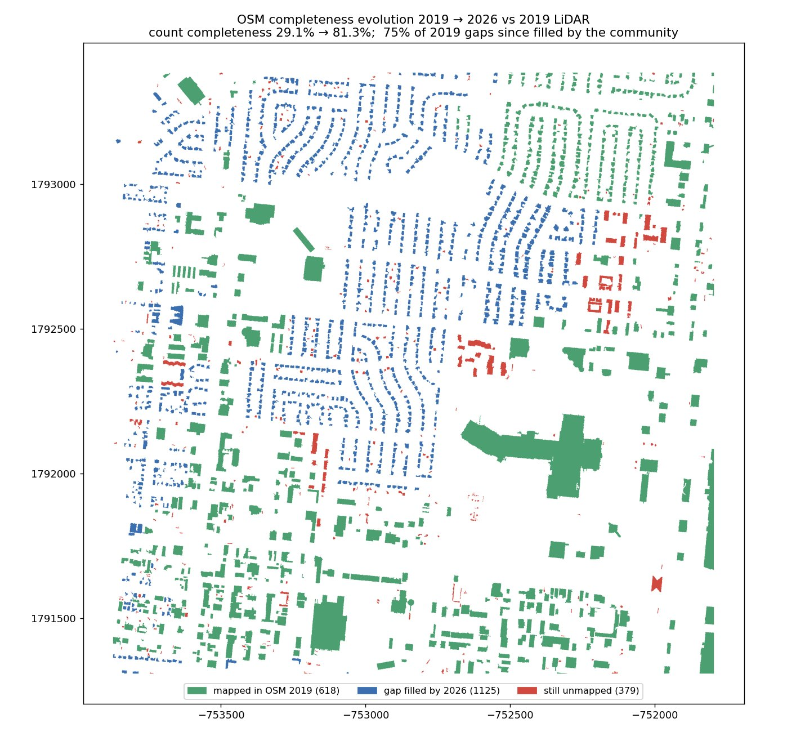
| metric | UIUC campus | Colorado Springs |
|---|---|---|
| OSM 2019 completeness (count / area) | 58.3% / 79.4% | 29.1% / 67.6% |
| gaps community-filled by 2026 | 64% | 74.8% |
| completeness today | 81.9% / 91.8% | 81.3% / 91.9% |
| road length with pavement evidence | 99.6% (major) | 99.9% |
From diagnosis to review-ready fixes
Because the community later filled most detected gaps, every machine proposal can be scored against what mappers actually drew — no manual labels. Three approaches compete on held-out ground: rule regularization, a learned U-Net, and a hybrid with a gradient-boosted acceptance scorer. Proposals carry OSM-ready tags but remain research artifacts under the OSM Automated Edits Code of Conduct.
| Geometry | Confidence | UIUC (83 labels) | Colorado Springs (821 labels) | |
|---|---|---|---|---|
| A rules | regularized footprint | threshold tiers | IoU 0.677 · P@50 0.62 | IoU 0.662 · P@50 0.46 |
| B learned | U-Net (NAIP + CHM) | mask probability | IoU 0.589 | IoU 0.769 |
| C hybrid | same as A | GBM acceptance scorer | AUC 0.738 · P@50 0.84 | AUC 0.985 · P@50 1.00 |
The practical recipe: start with rules while labels are scarce, swap in learning as community confirmations accumulate, and always rank the human-review queue with the learned scorer.
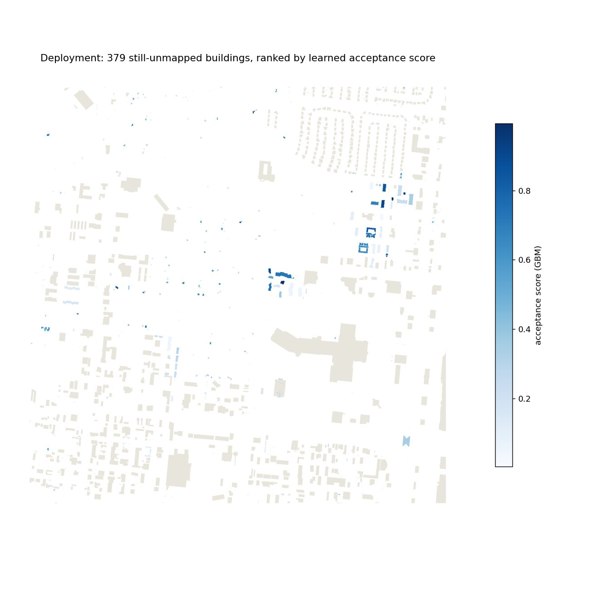
Everything is public, fetchable, and re-runnable
One command (python src/prepare_data.py)
stages every input from public storage. The notebook is pre-executed — every
figure on this page regenerates from scratch.
@software{vgi_spatial_bias_2026,
title = {Detecting and Correcting Spatial Bias in VGI Using Remote Sensing},
author = {Yang, Yifan and contributors},
year = {2026},
url = {https://github.com/rayford295/vgi-spatial-bias},
note = {I-GUIDE Summer School 2026 project}
}